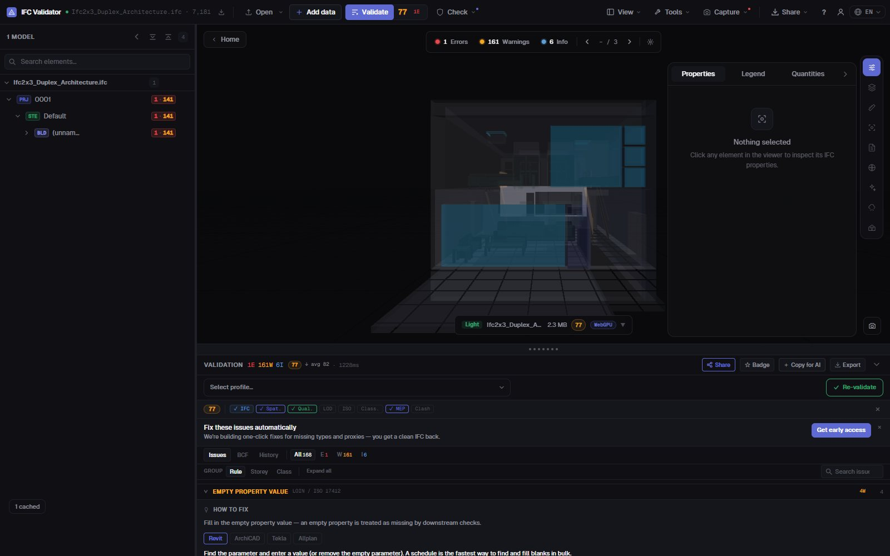

IFC Classification Checker
Uniclass, OmniClass, Psets
Find every element in an IFC that has no classification reference — any system, or only the ones your BIM Execution Plan requires — together with missing property sets, empty values and names that break your naming convention. Each finding is listed, counted and shown in 3D.
Check classification — free →No account · Nothing uploaded · Runs in your browser · Free
What you can do
Classification and data checks for a delivery
The checks a BIM coordinator runs before accepting a model into the CDE.
Missing classification
Every physical element without an IfcClassificationReference, from any system or only the systems you list (Uniclass 2015, OmniClass, CCS, NL-SfB…).
Classification by IDS
Load a buildingSMART IDS file to require a specific system and value per element type — the IDS classification facet is fully supported.
Property set validation
Missing required property sets and properties with empty values, per element class.
Naming convention
Check names against the patterns in your BEP, plus empty and duplicate names (renamable in bulk).
Shown in 3D
Isolate the failing elements of any check in the model, ghosting the rest, and jump to each one.
Exportable
Send the findings as BCF to the author, or download a CSV, a JSON report or a printable delivery report.
Screenshots

FAQ
Questions
How do I check the classification of an IFC model?
Open the IFC in IFC Viewer Online and run the validation with the classification rule on (the ISO 19650 and coordination profiles include it). It lists every element without a classification reference and shows them in 3D. For a specific system and code per element type, load an IDS file.
Which classification systems are supported?
Any system stored as IfcClassification / IfcClassificationReference in the file: Uniclass 2015, OmniClass, CCS, NL-SfB, CoClass, MasterFormat or your own. You can accept any system or only the ones you list.
Can it validate property sets too?
Yes. Rules flag missing required property sets and empty property values, and an IDS file can require specific properties, data types and values.
Is the model uploaded?
No. The check runs in your browser with WebAssembly; the IFC never leaves your computer. Free for any use, no account.
Can I share the results with the model author?
Yes: export the issues as BCF 2.1 for their authoring tool, as CSV or JSON, or as a printable delivery report.
Know what is unclassified before the model reaches the CDE.
Classification · Property sets · Naming · IDS · BCF
Check classification — free →